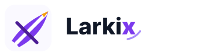
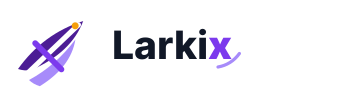
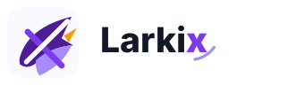
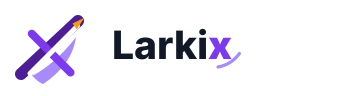
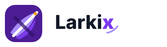

Larkix Ascend X 5 选 1
这组聚焦“鸟向上准备翱翔”的姿态：图形尽量少路径、少细节，紫色为主，X 作为上升翅膀里的结构切口保留。
本轮原则：越简洁越好；第一眼向上，第二眼看到 X；不做完整鸟身，不做复杂插画。




这组聚焦“鸟向上准备翱翔”的姿态：图形尽量少路径、少细节，紫色为主，X 作为上升翅膀里的结构切口保留。
本轮原则：越简洁越好；第一眼向上，第二眼看到 X；不做完整鸟身，不做复杂插画。




